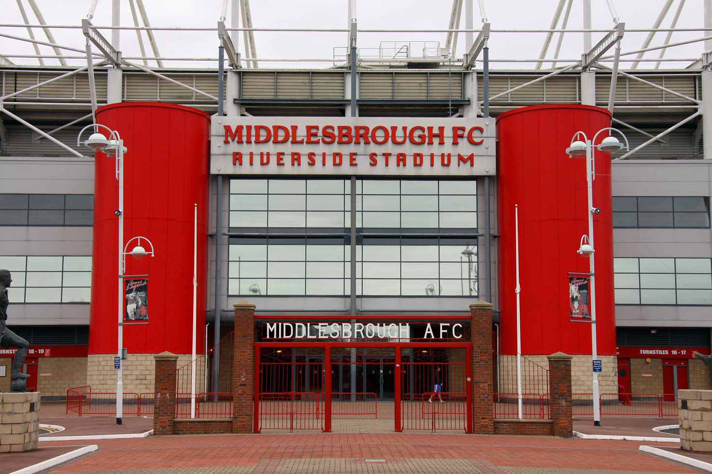

Middlesbrough have just come from the back of a 3-2 win against West Bromwich Albion at the Hawthorns. At the time of the win, Middlesbrough were 5 points ahead of 3rd placed Ipswich Town who had 2 games in hand and only 3 points behind leaders Coventry City who only had 1 game in hand. But playing before the other teams may actually be a blessing in disguise.

On the January 4th, Middlesbrough had just managed to thump Southampton 4-0 at the Riverside Stadium, and Ipswich Town... had their game with Portsmouth postponed. This allowed Middlesbrough to move back into 2nd place and go 2 points clear of Ipswich Town. Then just yesterday, Middlesbrough beat West Brom 3-2 allwong them to add another 3 points to the gap between the teams.
Middlesbrough may not have been able to win those games had the Portsmouth game gone ahead. The pressure of knowing that Ipswich Town could stay ahead may have affected the players mindset. Furthermore, the game against West Brom was moved to the day before Ipswich Town's game against Blackburn Rovers. This meant that Middlesbrough could focus entirely on their game without worrying about what Ipswich were doing. It would also put the pressure on Ipswich to win their games to keep up. Had Ipswich played first and won, it may have affected Middlesbrough's mindset going into their game. Infact, I personally believe that this scheduling has been the reason for Middlesbrough's victory last-night. Now while Ipswich managed to beat Blackburn with a comfortable 3-0 win, they now have play-off contention Bristol City. Should Ipswich slip up, Middlesbrough could keep there 2 point lead before they play Stoke City the day after.
Both Middlesbrough and Ipswich have a tough set of games coming up and so it will be interesting to see how they both fare.